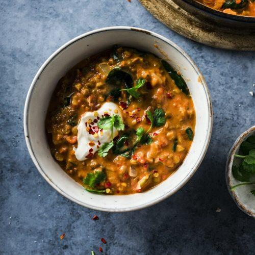

HOME
Linsegryte

Ingredienser
- En boks kikerter
- To bokser røde linser
- To bokser hakkede tomater
- En løk
- Spinat
- Hvitløk
- Koriander
- To bokser kokosmelk
- Ca 6ts rød currypaste
- En grønnsaksbuljong
- Naanbrød
- Rømme
Fremgangsmåte
- Fres løk og hvitløk i ca 5 min
- Bland inn hakket grønnsaksbuljong og currypasten
- Tilsett kokosmelk og hakkede tomater og kok opp
- Tilsett linsene og kikertene
- Bland inn spinat
- Strø koriander på toppen
- Server med naanbrød og rømme